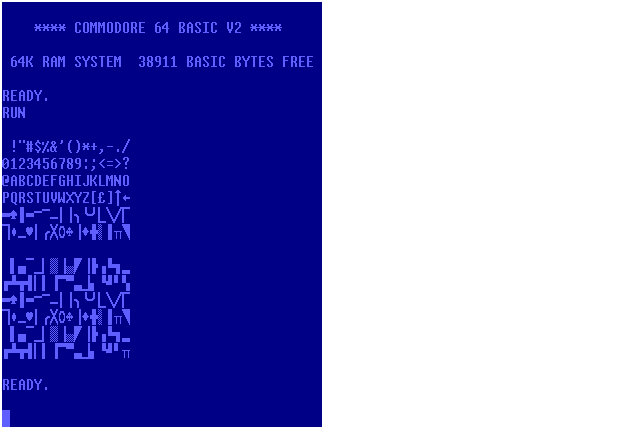
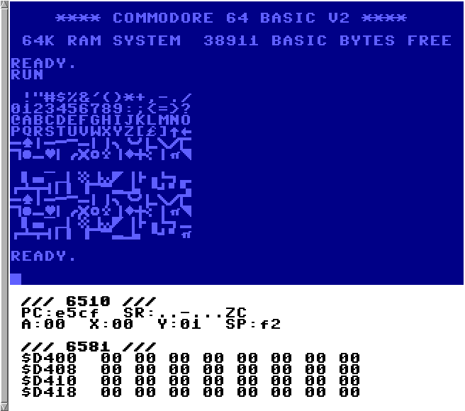

Terminal Mode Commodore 64 Emulator Unicode Support
I have added Unicode text support to my tmce64 emulator and bumped the version number to "0.5". This is to support drawing characters in the terminal that resembles PETSCII instead of just approximate ASCII. There are support for two different variants of this. The first variant is using symbols from the standard Unicode blocks "Box Drawing", "Geometric Shapes", "Block Elements" and "Symbols for Legacy Computing" which are pretty close to PETSCII. The other variant is using the style64.org TrueType PETSCII font, which has it's own private Unicode block.
The included Makefile will attempt to set the UNICODE define if Unicode support is detected in the running terminal when building the binary. This only enables support for the first variant. Using the second variant, the "style64.org" TTF font, requires additionally setting the C64_TTF define manually in the Makefile before building the binary.
If not using the "style64.org" TTF font, I recommend using the excellent unscii font, which has support for all the necessary Unicode blocks and also correctly displays the U+25E4 and U+25E5 triangles which looks weird with many other fonts.
Example on how to run an xterm in Unicode mode with the "unscii" font:
LC_ALL="en_US.UTF-8" xterm -en UTF-8 -fa "unscii" -fs 12
export TERM=xterm-256color
Which looks like this:

After running this BASIC program:
10 for i=32 to 127
20 if (i and 15)=0 then print
30 print chr$(i);
40 next i
45 print
50 for i=160 to 255
60 if (i and 15)=0 then print
70 print chr$(i);
80 next i
85 print
Here is another example on how run rxvt-unicode with the "style64.org" TTF font:
LC_ALL="en_US.UTF-8" urxvt256c -fn "xft:C64 Pro:pixelsize=16"
Which looks like this:

I included some extra debug information in the screenshot, otherwise it would be easily mistaken for any other Commodore 64 emulator!
Version 0.5 can be downloaded here but the GitHub, GitLab and Codeberg repositories have also been updated.